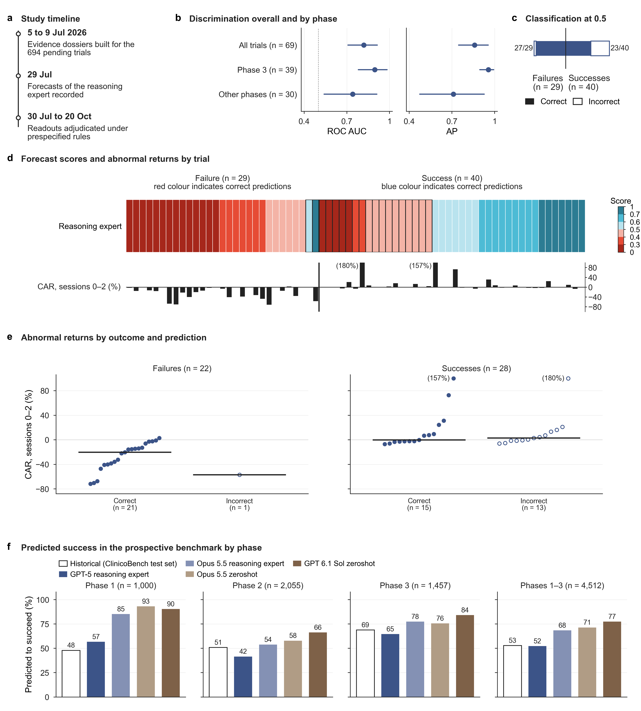

Benchmark results are released in installments on the last day of each month. The first installment will be posted on 30 November 2026; each later release adds the benchmark trials whose outcomes were adjudicated since the previous one.
694 trials with forecasts recorded on 29 July 2026; 69 readouts adjudicated by 20 October 2026.
ROC AUC and average precision (AP) with 95% bootstrap confidence intervals; success is the positive class. Analyses by phase are exploratory.
| Trials | n | Successes | ROC AUC | AP |
|---|---|---|---|---|
| All trials | 69 | 40 | 0.8190.708 to 0.914 | 0.8600.747 to 0.955 |
| Phase 3 | 39 | 26 | 0.8960.781 to 0.983 | 0.9560.896 to 0.993 |
| Other phases | 30 | 14 | 0.7410.540 to 0.911 | 0.7110.473 to 0.927 |
At the prespecified threshold of 0.5 the reasoning expert identified 27 of the 29 failures and classified 17 of the 40 successes as failures. Each trial is listed on the Results page.
Percentage of the benchmark trials registered as phase 1, 2 or 3 with a success probability of at least 0.5. Outcomes of these trials are pending.
| Forecast | Phase 1n = 1,000 | Phase 2n = 2,055 | Phase 3n = 1,457 | Phases 1 to 3n = 4,512 |
|---|---|---|---|---|
| GPT-5 reasoning expert | 56.7 | 41.6 | 64.7 | 52.4 |
| Claude Opus 5.5 reasoning expert | 85.3 | 53.8 | 77.6 | 68.5 |
| Claude Opus 5.5 zero shot | 93.2 | 57.9 | 75.6 | 71.5 |
| GPT-6.1 Sol zero shot | 90.5 | 66.3 | 84.2 | 77.5 |
| Historical success rate | 48 | 51 | 69 | 53 |
Historical success rate: ClinicoBench test set, for reference.

Prospective evaluation of TrialOutlook. a, Timeline of the initial prospective cohort. b, ROC AUC and AP of the reasoning expert in the 69 adjudicated trials (40 successes and 29 failures), overall and by development phase (exploratory), with 95% bootstrap CIs; the dotted line marks a ROC AUC of 0.5. c, Classification at the prespecified threshold of 0.5 by adjudicated outcome. d, Forecast scores of the reasoning expert for the 69 trials, ordered by score within each outcome (top; outlined cells mark incorrect predictions), and cumulative abnormal returns (CARs) over trading sessions 0 to 2 for the 50 eligible announcements (bottom). e, CARs of the 22 unsuccessful and 28 successful trials with eligible announcements by whether the prediction of the reasoning expert was correct (filled) or incorrect (open); horizontal lines show medians. In d and e, values beyond 100% are truncated, with the observed value in parentheses. f, Percentage of benchmark trials registered as phase 1, 2 or 3, and of the three phases combined, predicted to succeed (probability of at least 0.5) by the GPT-5 and Claude Opus 5.5 reasoning experts and the zero shot forecasts of Claude Opus 5.5 and GPT-6.1 Sol, with the historical success rates of the ClinicoBench test set as reference. Select the figure to open it at full size.
The Results page lists the 69 adjudicated readouts of the initial prospective cohort. To be scored in an installment, forecasts must be submitted while the trials are pending; see Contribute.